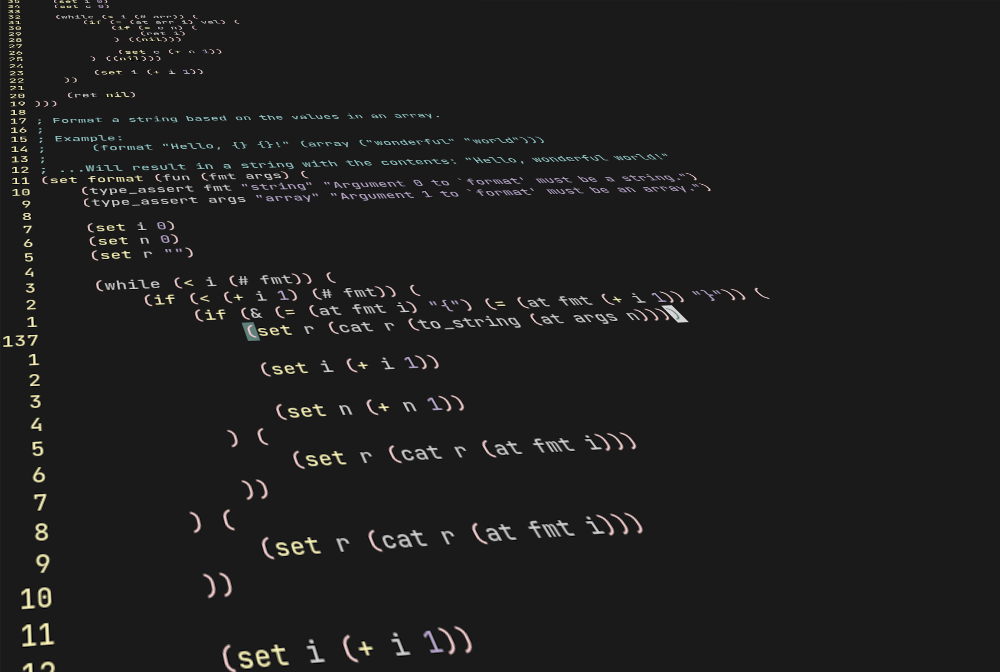

February 23, 2022
Recently, I took it upon myself to create a scripting language. The goal in mind was to create a command system not dissimilar to the one found in Source games for my game, where a textual command can be entered, followed by some arguments that the game will process to perform a certain action. The ultimate idea of such a system is for users to be able to string commands together into a file to allow them to customise their playing experience but it also helps for debugging purposes.
I chose to implement an imperative bytecode interpreted dynamic programming language that uses Lisp-inspired syntax.
It does not allow custom user types to be created in the language itself (for simplicity of implementation), though it does allow C data to be managed by the script through "user pointer" types. It also supports "native functions", which are functions registered by a C program that can be called by the scripting language.
Any line in the language that starts with a semi-colon, like in Lisp, is ignored by the compiler and treated as a comment.
The language has two forms of flow control:
The while loop:
(set i 0)
(while (< i 100) (
(print i)
(set i (+ i 1))
))
...And the if statement:
(if true (
(print "True!")
) (
(print "False")
)
The while loop functions as would be expected in any other imperative programming
language. The if statement, however, is compiled a little differently to most other
languages in that an "else" branch is required and implicit, and it does not include
an "else if". This was a choice to aid simplicity of implementation; The "else if"
branch also doesn't translate well into the Lisp-like syntax that my language uses.
The language also supports functions with arguments and return values, as well as variables.
; A basic function to add `a' and `b', printing
; and returning the result.
(set add_numbers (fun (a b) (
(set result (+ a b))
(print result)
(ret result)
)))
The following code:
(set i 0)
(while (< i 100) (
(print i)
(set i (+ i 1))
))
Would roughly get compiled into:
push <constant (0)>
set 0
get 0
push <constant (100)>
less_than
jump_if_false 13
get 0
print
get 0
push <constant (1)>
add
set 0
pop
back_jump 18
The compiler is a single-pass recursive-decent compiler, meaning it does not first parse the code into an AST before compiling it into bytecode. The reason why I chose to do this is because I considered creating an entire AST data structure and associated operations to be overkill for a language with such simple syntax. Instead, the compiler recursively parses expressions and generates bytecode at the same time. This makes it very fast, but does mean it is a little more messy than if an AST were used.
Addition, for example, is compiled like so:
parser_recurse();
parser_recurse();
lsp_chunk_add_op(ctx, chunk, op_add, parser->line);
op_add instruction is emit
to add the two values and push the result onto the stack. At any point in the compile
process, an error might occur, in which case the parser_recurse macro will return
the current function with a failing value, which in turn will cause the surrounding
function to also return and so on, until the compilation is halted.
For some value types, such as numbers and Boolean values, it is possible to store the data for the value directly in the union. For certain other value types, such as strings, however, the C compiler cannot know how big each string that the script will need at compile time, thus a heap allocation is required for the string's characters. Indeed, a fixed-size array could be allocated directly in the value union, only this limits the size of script strings and bloats up the value structure which makes pushing and popping them on and off the stack slower, even for values like numbers which don't need the array. This problem is solved using an "object" value type. Objects are allocated from a fixed-sized array in the script context and contains information about the type of object and the separate heap allocation for the object's data (in the case of a string; The string's characters, or for a function; The function's bytecode).
Having all these heap allocations introduced another problem, however...
I implemented an incredibly simple mark and sweep garbage collector. The entire garbage collector can be summed up in a single function:
void lsp_collect_garbage(struct lsp_state* ctx) {
for (u32 i = 0; i < ctx->obj_count; i++) {
struct lsp_obj* obj = ctx->objs + i;
obj->mark = 0;
if (obj->is_const || obj->type == lsp_obj_fun) {
obj->mark = 1;
}
}
for (struct lsp_val* slot = ctx->stack; slot < ctx->stack_top; slot++) {
lsp_mark_obj(ctx, *slot);
}
for (u32 i = 0; i < ctx->obj_count; i++) {
struct lsp_obj* obj = ctx->objs + i;
if (obj->mark == 0 && !obj->recyclable) {
lsp_free_obj(ctx, obj);
}
}
}
First, it iterates all the currently alive objects and unmarks them. It leaves the mark on constant and function objects, since they must last the lifetime of the script. Then, to mark the objects currently in-use, it iterates the stack and marks them all. If an object is not on the stack, not a constant and not a function, it will not be marked and will be freed. This is because all variables are stored on the stack, so if something is not on the stack and not a constant it cannot be used by the program any-more. Now, it iterates all the objects once more and frees all of the objects that don't have a mark.
I haven't figured out an appropriate time to actually call the garbage collector. It is quite a difficult problem to solve, since calling it too often will hurt the program's performance, but not calling it enough will mean the program's memory usage will become too high. At the moment, it is called whenever the limited sized pool of objects runs out of space. This is not optimal, so I also exposed the garbage collector to the scripting language's standard library so that users may call upon it when they have finished with a lot of objects, much like Lua does.
; Asserts the type of val against t, excepting err on failure
(set type_assert (fun (val t err) (
(if (! (= (type t) "string")) (
(except "Argument 1 to `type_assert' must be a string.")
) ((nil)))
(if (! (= (type err) "string")) (
(except "Argument 2 to `type_assert' must be a string.")
) ((nil)))
(if (! (= (type val) t)) (
(except err)
) ((nil)))
)))
; Function to split a string into an array by a specified delimiter
(set split (fun (str delim) (
(if (! (& (= (type str) "string") (= (type delim) "string"))) (
(except "Arguments to `split' must be strings.")
) ((nil)))
(if (> (# delim) 1) (
(except "Delimiter must be a single character")
) ((nil)))
(set r (array))
(print delim)
(set cur "")
(set i 0)
(while (< i (# str)) (
(if (= (at str i) delim) (
(seta r (# r) cur)
(set cur "")
) (
(set cur (cat cur (at str i)))
))
(set i (+ i 1))
))
(seta r (# r) cur)
(ret r)
)))
; Format a string based on the values in an array.
;
; Example:
; (format "Hello, {} {}!" (array ("wonderful" "world")))
;
; ...Will result in a string with the contents: "Hello, wonderful world!"
(set format (fun (fmt args) (
(type_assert fmt "string" "Argument 0 to `format' must be a string.")
(type_assert args "array" "Argument 1 to `format' must be an array.")
(set i 0)
(set n 0)
(set r "")
(while (< i (# fmt)) (
(if (< (+ i 1) (# fmt)) (
(if (& (= (at fmt i) "{") (= (at fmt (+ i 1)) "}")) (
(set r (cat r (to_string (at args n))))
(set i (+ i 1))
(set n (+ n 1))
) (
(set r (cat r (at fmt i)))
))
) (
(set r (cat r (at fmt i)))
))
(set i (+ i 1))
))
(ret r)
)))
One of the biggest challenges I encountered while creating this interpreter was implementing functions. I had a lot of bugs where local variables created inside functions would overwrite function arguments due to the stack not behaving the way that I expected. It took a good few days of debugging to figure out the cause (which happened to be that the variables were not being compiled to take into account the space in the stack taken up by the function arguments).
I also would not have made it this far in this adventure without Robert Nystrom's Crafting Interpreters. It is a brilliantly written book, always there to help me out whenever I had questions about details about how a particular feature of an interpreter might be implemented.